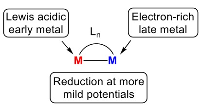
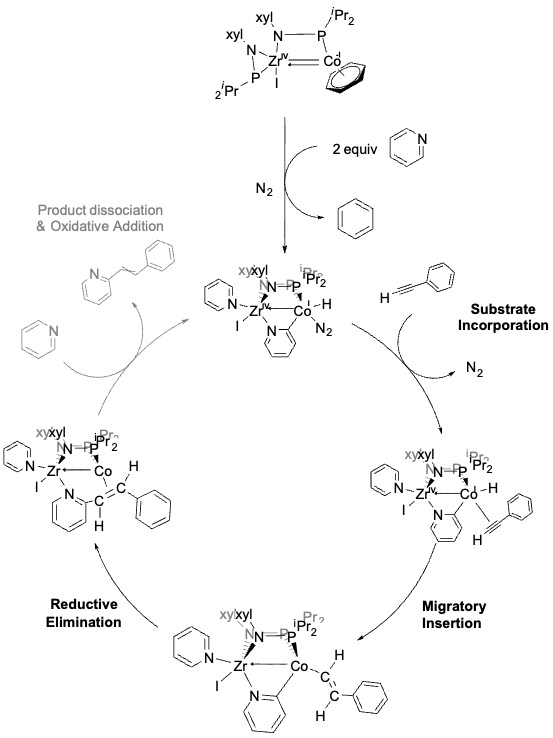

Over the years, C–H bond activation and functionalization have been predominantly carried out using second- and third-row transition metals. To improve the economic viability of these reactions, the use of more Earth abundant metal catalysts has become increasingly important. My research uses heterobimetallic complexes for molecular transformations with the goal of performing catalysis with more Earth-abundant transition metals. By using a Lewis acidic moiety (an early transition metal) with a late transition metal with the capacity to storage electrons, we observe metal–metal cooperativity in molecular transformations (Figure 1). The polarized metal–metal bond in our systems allows redox events to occur at milder potentials, giving access to cobalt in negative oxidation states.

Previously our lab has demonstrated that a bis(phosphinoamide) Zr(IV)/Co(-I) bimetallic complex is capable of C–H bond activation in pyridine. In this system, a PMe3 ligand coordinated to the cobalt center helped stabilize the negative oxidation state. Unfortunately, attempts to achieve subsequent functionalization were unsuccessful given the high coordination number of the Co Center. Hypothesis: The synthesis of a bis(phosphinoamide) Zr(IV)/Co(-I) complex employing a more labile ligand to stabilize the low-valent cobalt center will enable substrate insertion, thereby facilitating functionalization following C–H bond activation. Indeed, the use of an arene-bound Zr(IV)/Co(-I) precursor has demonstrated successful C–H activation and functionalization of pyridine and other nitrogen-containing substrates bearing both electron-donating and electron-withdrawing substituents. We demonstrated that pyridine ring substitution during C–H bond activation significantly influences the electronic structure at the cobalt center, as monitored by shift trends in the N2 stretching frequency via IR spectroscopy. In contrast to the PMe3 analogue, our complex exhibits lower propensity for reversible C–H activation, consistent with a less stable arene-bound precursor. Furthermore, competition experiments confirmed enhanced thermodynamic stability and a clear preference for substrates bearing electron-donating groups. Functionalization was observed successful with a terminal alkyne like phenylacetylene and substituted versions. Through single-crystal X-ray diffraction and DFT calculations, we have proposed a mechanism and established the corresponding catalytic cycle. Although we can detect and identify the organic products resulting from functionalization by GC-MS and TLC, the metal complex undergoes decomposition once the product is formed. DFT suggest that a strong N-Zr bond and a ring interaction with the Co center are preventing dissociation of the new value-added pyridine (2-styrylpyridine). Furthermore, preliminary results also demonstrate successful C–N and C-B bond formation via amination using azides and hydroboration using pinacolborane.
